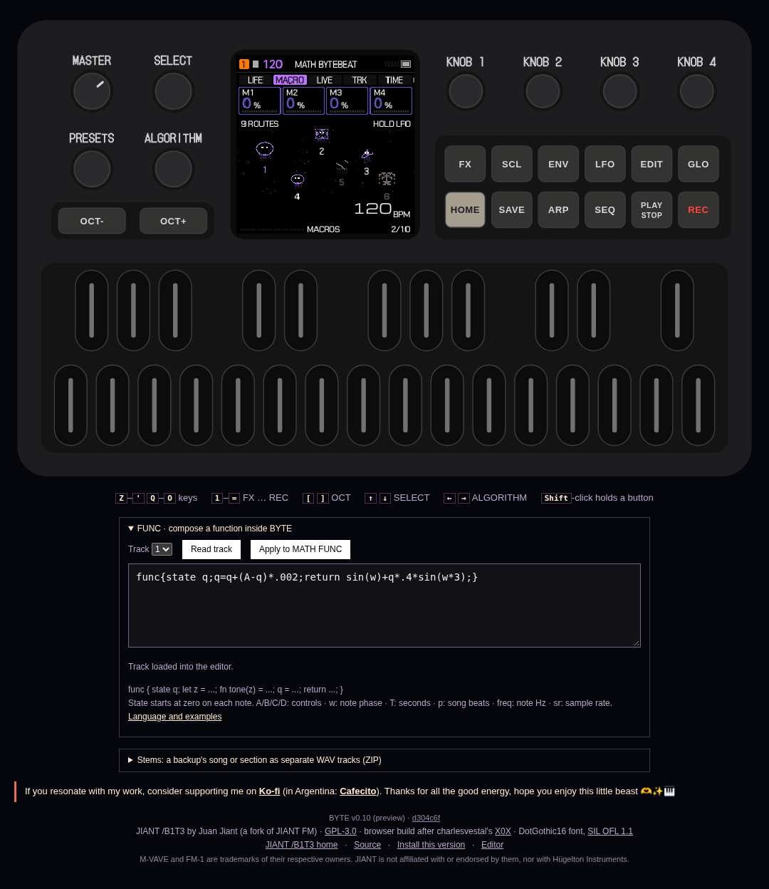

Abrir emulador · Instalador · Guía FUNC
Programa con estado por voz, función auxiliar y controles A/B/C/D. Audio generado por la misma VM del firmware y WASM.
Se escucha únicamente la pista receptora WAVE. A los0,5s entra una voz FUNC; a 1 s otra nota WAVE; desde 1,5s hay golpes de batería cada medio segundo. Los donantes no se mezclan en la salida: lo audible es cómo transforman al receptor. NUM, FRAG y LINK en 100; los archivos están igualados por RMS.
El nuevo extremo ocupa el último cuarto del recorrido. La zona 0–75 conserva el comportamiento anterior. Las pruebas de golpes incluyen también caja y clap, de fórmula y clásicos. Métricas reproducibles.
El instrumento también permite editar con sus controles. En el navegador, el panel FUNC facilita escribir programas. Guardar el proyecto conserva el código.

Compilado y comprobado en computadora; la carga CPU y el sonido en hardware físico siguen pendientes de prueba.